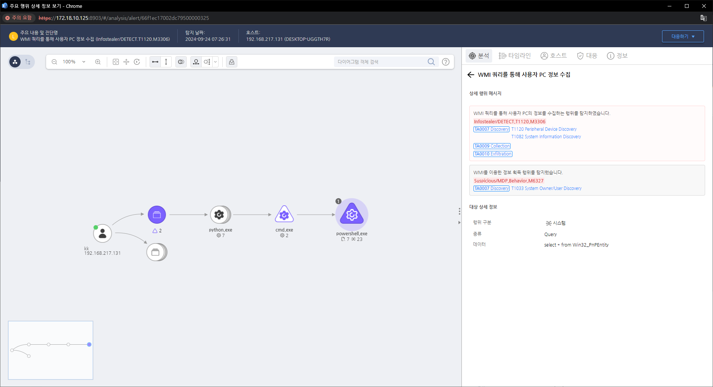

T1120.000.01 Peripheral Device Discovery
D3FEND
MITRE ATT&CK 액션을 기준으로 대응 방안을 작성
Detection
의심스러운 프로세스가 WMI를 이용하여 정보 획득 행위(Peripheral Device Discovery)를 탐지합니다.
Detection(EDR)

Response
해당 행위를 수행한 프로세스를 종료합니다.
Mitigations
USB 및 외장 저장 장치 제어 (M1031 - Network Segmentation & M1037 - Network Intrusion Prevention)
- USB 저장 장치 사용 제한: 그룹 정책(GPO), DLP(Data Loss Prevention) 솔루션을 활용하여 비인가된 USB 장치 차단
- 자동 실행(Autorun) 비활성화: Windows 및 Linux 시스템에서 USB 장치의 자동 실행 기능을 차단하여 악성 코드 감염 방지
- USB 및 이동식 미디어 로그 감시: SIEM(Security Information and Event Management) 시스템을 활용하여 USB 장치 연결 및 데이터 이동 모니터링
네트워크 장치 검색 제한 (M1037 - Network Intrusion Prevention & M1026 - Privileged Account Management)
- 비인가 사용자의 네트워크 장치 검색 차단: 내부 방화벽 설정을 통해 ICMP, SNMP, NetBIOS 등의 탐색 프로토콜 제한
- L2 스위치 보안 강화: 포트 보안(Port Security) 및 MAC 주소 기반 필터링 적용하여 비인가 장치 연결 차단
- ARP 스푸핑 및 네트워크 스캐닝 탐지: IDS/IPS(Intrusion Detection/Prevention System) 솔루션을 활용하여 네트워크 장치 검색 시도를 감지 및 차단
PowerShell 및 WMI 제한 (M1038 - Execution Prevention & M1047 - System Logging & Monitoring)
- PowerShell 실행 제한: AppLocker 또는 WDAC(Windows Defender Application Control)를 활용하여 비인가된 PowerShell 스크립트 실행 차단
- WMI 명령어 사용 제한: 그룹 정책을 활용하여 비관리자 계정이 WMI 명령어를 실행하지 못하도록 제한
- 의심스러운 명령어 실행 모니터링: PowerShell 및 WMI 로그 감시 및 SIEM 시스템을 활용하여 주변 장치 검색 활동 탐지
블루투스 및 무선 장치 보안 강화 (M1032 - Multi-Factor Authentication & M1019 - Awareness and Training)
- 블루투스 장치 사용 제한: 조직 정책으로 불필요한 블루투스 장치 연결 차단 및 블루투스 탐색 기능 비활성화
- 무선 네트워크 접근 제한: WPA3 보안 프로토콜 적용 및 MAC 주소 필터링을 통해 비인가된 무선 장치 연결 방지
- 보안 교육 실시: 직원들에게 의심스러운 주변 장치 연결 및 탐색 활동 감지 방법을 교육
주변 장치 로그 및 활동 모니터링 (M1047 - System Logging & Monitoring)
- Windows Event Log 및 Sysmon 활용: USB, 프린터, 네트워크 장치 연결 활동을 지속적으로 감시
- DLP(Data Loss Prevention) 솔루션 적용: 외부 장치로 대량의 데이터가 이동하는 경우 자동으로 차단
- Endpoint Detection & Response (EDR) 솔루션 활용: 이상징후 탐지 및 경고 시스템 적용 를 줄입니다.
Affected Techniques
Action 실행시 함께 영향을 받는 다른 Techniqes
| ATT&CK |
| T1059.001 |
| T1047.000 |
| D3FEND |
| D3-SCA System Call Analysis |